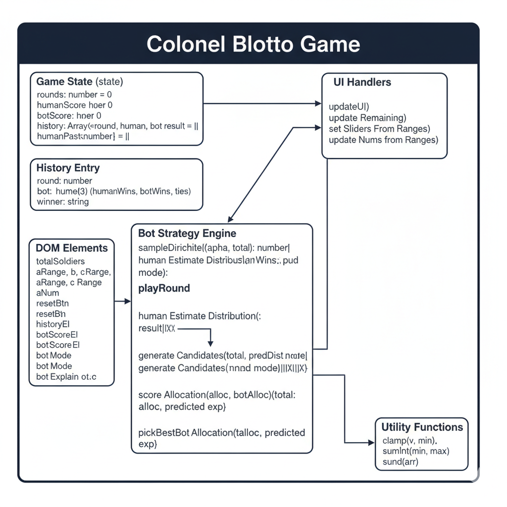

Colonel Blotto Game, iki oyuncunun (örneğin iki komutanın) belirli miktarda kaynak (asker, para, enerji vb.) üzerinde stratejik dağılım yaptığı klasik bir sıfır toplamlı oyundur. Oyuncular kaynaklarını belirli sayıda cepheye dağıtır. Her cephede daha fazla kaynak ayıran oyuncu o cepheyi kazanır. Oyunun sonunda en çok cephe kazanan taraf galip gelir.
(x₁, x₂, x₃) ve toplamı 100’dür.Her cephede kazanım, daha fazla asker gönderen oyuncuya 1 puan kazandırır. Toplam puan farkına göre kazanan belirlenir. Örneğin:
Cephe | Oyuncu A | Oyuncu B | Kazanan
--------|-----------|-----------|--------
1. Cephe| 40 | 30 | A
2. Cephe| 30 | 40 | B
3. Cephe| 30 | 30 | Berabere
Sonuç: Oyuncuların toplam kazancı eşit olduğundan oyun berabere biter.
Nash Dengesi: Her iki oyuncu da karşı tarafın stratejisini bildiğinde kendi stratejisini değiştirmek istemiyorsa denge sağlanır. Bu oyunda Nash dengesi, oyuncuların askerlerini eşit ve dengeli dağıttıkları durumlarda görülür.
Pareto Optimum: Her iki oyuncunun da durumunu kötüleştirmeden birinin kazancını artırmak mümkün değilse Pareto optimum sağlanır. Bu oyun sıfır toplamlı olduğundan Pareto optimum, Nash dengesiyle çakışır.
Oyunun matematiksel formülasyonu:
Maksimize et: ∑ wᵢ * sgn(xᵢ - yᵢ)
Kısıt: ∑ xᵢ = ∑ yᵢ = K
xᵢ, yᵢ ≥ 0
Burada wᵢ cephe ağırlığını, xᵢ ve yᵢ oyuncuların kaynak dağılımlarını temsil eder.
Denge stratejilerini bulmak için doğrusal programlama veya Monte Carlo simülasyonu kullanılabilir. Basit yaklaşımlarda rastgele strateji üretip kazanan sayılabilir. Karma strateji denge hesaplaması, oyun kuramında olasılıksal kararlılık analiziyle yapılır.
Aşağıdaki UML diyagramı oyun yapısını temsil eder:
Oyun, JavaScript tabanlı web uygulaması olarak geliştirilmiştir. Kullanıcılar web tarayıcısı üzerinden oyunu oynayabilir. Kodlar GitHub üzerinde paylaşılmıştır.